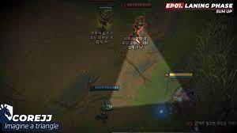

Trading

There are four, and only four, parts to a successful trade:
- Get from a point of safety to a point where you can attack.
- Do your damage.
- Somehow avoid their damage.
- Get out to safety.
That’s it. It isn’t any more complicated than that. There’s no magic formula, there’s no “god mechanics”, just this. Get in, hit ‘em, don’t get hit, get out.
Map Awareness
Try to make it a habit to look as often as possible, after some practice you'll automatically know how often is necessary. It's something that comes with practice and forcing yourself to pay attention to, similarly like starting to pop a potion as an allin trade starts in lane.
What to look for:
- Everything that is out of the ordinary. Is a laner missing? Is a jungler showing?
- Pings
- Timers: a white hourglass symbol appears (buffs, scuttle, dragon, herald, baron) = 1 min until spawn, it turns yellow = 20 sec until spawn
- Camps that are up (only reliable if it died in teamvision)
- Health of turrets, a low health turret looks "empty"
- Position of minions (small circles)
- Particles like globals, teleport/recall or scryer's orb plant
- Health, mana and available ult at the teammate symbols next to the minimap
If you have trouble reminding yourself about looking at the map use regularly occuring events to remind yourself, e.g. a dying minion or one of those youtube videos that remind you.
Warding
Warding plays a crucial role, often overlooked by players in lower ranks. Maintaining vision is pivotal in League of Legends, and so is placing wards strategically.
- Mid lane is now safer, but the river bush seems elongated, making full vision challenging. Place the ward as far into the bush as possible for optimal vision.
-
Top Lane:
- Red Side:
- Opt for river warding instead of the obvious bush warding. This provides advanced notice if the enemy jungler approaches.
- In the jungle, place a ward beside the bush to see any incoming junglers from both paths.
- Blue Side:
- Avoid the obvious bush ward and opt for warding beside it.
Rotation
It is important to know when to rotate and how long does it take.
Below, full timer list without boots at 330 movespeed
- 16 seconds - wolf to mid
- 9 seconds - quick pathing raptor to mid
- 11 seconds - slow pathing raptor to mid
- 11 seconds - center river to mid
- 15 seconds - blue to mid
- 2 seconds - gromp to blue
- 18 seconds - krugs to mid
- 21 seconds - bot to mid
- 22 seconds - top to mid
- 25 seconds - base to mid tower
- 30 seconds - base to center mid
- 12 seconds - bot to blue buff
- 14 seconds - bot lane to gromp
- 17 seconds - wolf to bot lane
- 10 seconds - center of river to bot lane
- 30 seconds - base to bot tower
- 37 seconds - base to center lane bot
- 30 seconds - base to top tower
- 37 seconds - base to center lane top
- 11 seconds - krugs to top lane
- 14 seconds - red to top lane
- 18 seconds - raptor to top lane
Builds
- Mobalytics
- Blitz.gg
| Doran's Ring | Dark Seal |
| Doran's Shield | Ruby Crystal |
Thanks for reading this guide. Read more about: League of Legends reddit